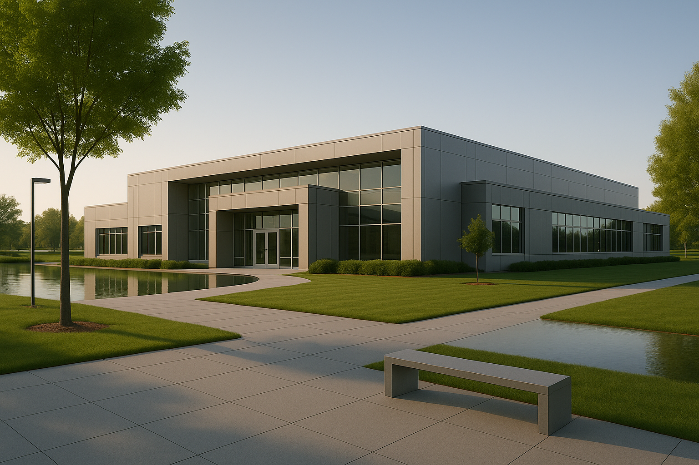

Naawi-Oodena

Communities info
Naawi-Oodena
Naawi-Oodena Urban Reserve
- Meaning: "Naawi-Oodena" translates to "Centre of the Heart and Community" in Anishinaabemowin.
- Location: Situated in southwest Winnipeg, near the River Heights and Tuxedo neighborhoods.
- Size: Covers 160 acres, making it the largest urban reserve in Canada.
-
Leadership: Jointly managed by seven Treaty One
First Nations:
- Brokenhead Ojibway Nation
- Long Plain First Nation
- Peguis First Nation
- Roseau River Anishinaabe First Nation
- Sagkeeng First Nation
- Sandy Bay Ojibway First Nation
- Swan Lake First Nation
Community Features
- Vision: To create a vibrant, inclusive community that honors Indigenous culture and fosters economic growth.
-
Amenities:
- Mixed housing options for families, seniors, and individuals.
- Local shopping centers, restaurants, and services.
- Abundant green spaces, parks, and community gardens.
- Educational facilities and cultural centers.
- Health and wellness services.
- Recreational facilities, including sports fields and walking trails.
- Sustainable design elements and accessible public spaces.
Housing Options
-
Types of Homes:
- Single-family homes with yards.
- Townhouses offering low-maintenance living.
- Apartment buildings with various unit sizes.
- Affordable housing options for different income levels.
- Seniors housing with accessibility features.
- Design Philosophy: Homes will blend with nearby neighborhoods while incorporating Indigenous architectural elements and sustainable building practices.
Business & Shopping
-
Commercial Spaces:
- Grocery stores and markets.
- Restaurants and cafes.
- Retail shops and services.
- Indigenous-owned businesses.
- Office spaces and a community enterprise center.
- Cultural tourism venues.
- Economic Impact: These businesses aim to provide shopping options and employment opportunities for community members.
Parks & Recreation
-
Outdoor Spaces:
- Neighborhood parks with playgrounds.
- Community gardens and greenways.
- Sports fields and courts.
- Walking and biking trails.
- Cultural gathering spaces.
-
Recreation Facilities:
- Community center with programs.
- Youth activity spaces.
- Fitness and wellness center.
- Indigenous cultural programs.
- Event and meeting spaces.
- Purpose: These amenities are designed to enhance quality of life by providing places for relaxation, play, and community connection.